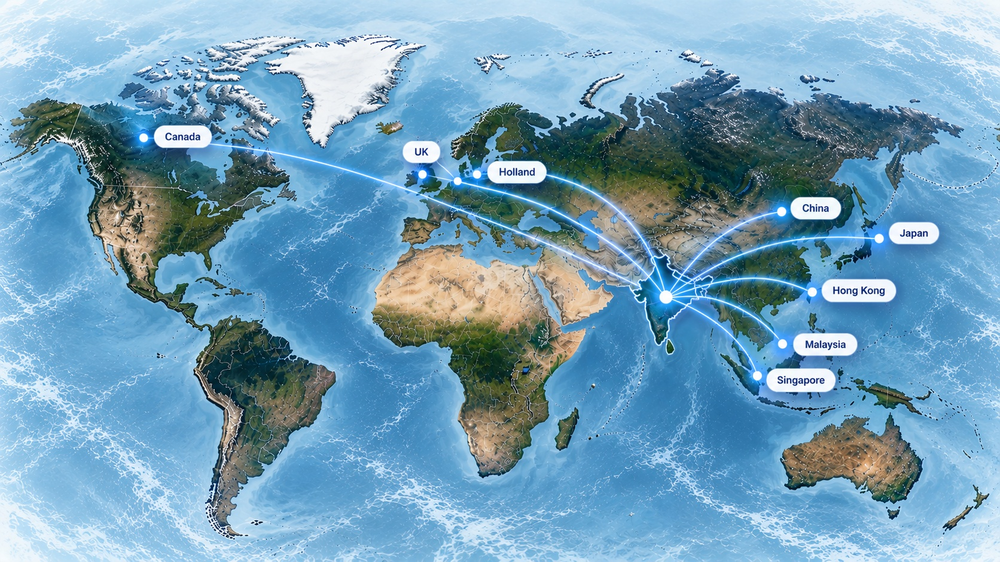

OUR GLOBAL REACH
Clients & markets
Our current business connections span key markets across North America, Europe and Asia.
CURRENT MARKETS
Connected across the world.
The countries shown below are the current business markets provided by Agriseafoods.
OUR GLOBAL REACH

International seafood connectionsIllustrative global map; current markets are listed below.
01CanadaNorth America
02United KingdomEurope
03HollandEurope
04ChinaEast Asia
05JapanEast Asia
06Hong KongEast Asia
07MalaysiaSoutheast Asia
08SingaporeSoutheast Asia
“
With trust & confidence, we deliver.
For enquiries about current products, specifications and destination markets, contact our team.